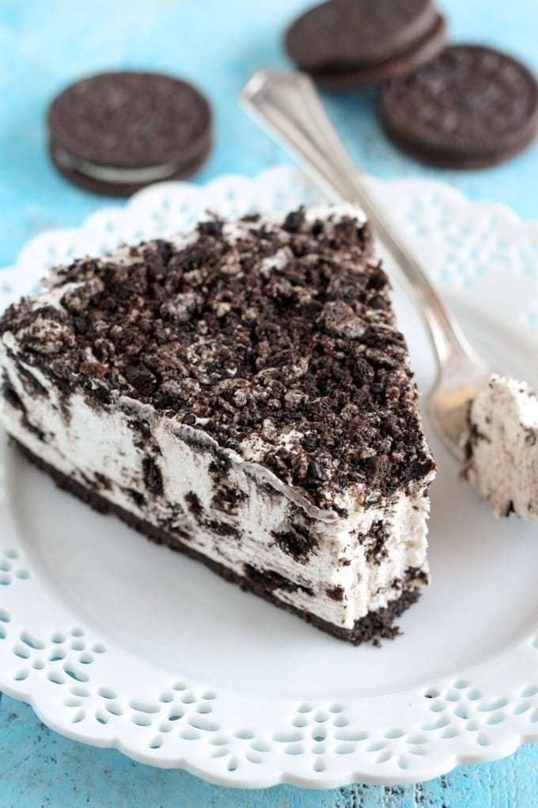

BakeHub
Danielle's Favorite Baking Recipes
The Easiest No-Bake Oreo Cheesecake

You won’t need to worry about burning your bake!
Difficulty: Easy
Ingredients:
- 48 Oreos (one large pack)
- 4 tablespoons of unsalted, melted butter
- 16 ounces of cream cheese at room temperature
- 1 cup of powdered sugar
- 1.5 teaspoons of vanilla extract
- 2 cups of cold heavy whipping cream
- Line the bottom of a 9 inch circular pan with parchment paper.
- Put 24 Oreos into a gallon size ziplock bag and seal. Crush the oreos with a rolling pin until fine crumbs. Pour the crumbs into a bowl.
- Pour the melted butter into the bowl with the crushed Oreos. Mix until all of the crumbs are moistened.
- Scoop the mixture into the prepared pan. Evenly spread the buttered Oreo crumbs into a layer across the bottom of the pan. Cover the pan with plastic wrap and put it in the refrigerator to chill while making the cheesecake filling.
- Using an electric stand mixer, beat the room-temperature cream cheese until it is smooth. Mix in the powdered sugar and vanilla extract until well combined.
- In a separate bowl, pour the heavy whipping cream and beat with an electric mixer on low-medium until the mixture thickens. Increase the speed to medium-high and beat until stiff peaks form.
- Gently fold the whipped cream into the cream cheese mixture until just combined.
- Chop the remaining 24 Oreos into small pieces. Fold the pieces into the cheesecake mixture.
- Remove the pan with the Oreo crust from the refrigerator. Pour the cheesecake mixture into the pan and spread into an even layer. Cover the pan with plastic wrap and refrigerate overnight.
- Cut the cheesecake into slices and enjoy!
Recipe adapted from LiveWellBakeOften